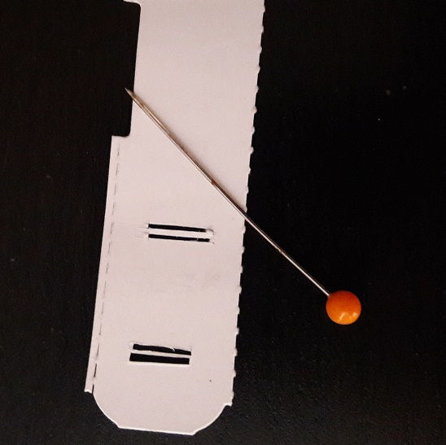

Intentemos dar un repaso dentro de lo posible a este asunto sin entrar en los detalles matemáticos.
| Prisma de Newton. Esquema simplificado. Fuente: The Dark Side of the Moon - Pink Floyd |
{kind=link}
Permitidme una breve disertación. Durante mi etapa escolar, siendo yo niño o adolescente, una de las cosas que encontraba más frustrantes era tratar de reproducir en casa el experimento que venía en el libro, siguiendo al pie de la letra el dibujo y la descripción, y que no funcionase.
El diagrama ilustrativo tiene que ayudar a entender los conceptos, simplificado pero sin ser abiertamente falso. Acompañemos una explicación de cómo sería el experimento en la realidad o por qué no funcionaría con ese montaje tan simple.
Quisiera conocer al tipo que hizo el experimento de la doble rendija de Young con un cristal ahumado, una vela y una caja de zapatos y vio el patrón de difracción que todos conocemos. Para ilustrar lo que quiero decir, en este video lo hacen de una forma similar pero que de hecho, funciona: The Original Double Slit Experiment - Veritasium.
Fuentes ideales
Para las ilustraciones vamos a usar una herramienta que se llama Ray Optics Simulation. La tenéis como aplicación web y también como aplicación para Chrome.
Hay dos tipos de fuentes de luz ideales: el frente de ondas plano, y la fuente de luz puntual. Ninguna de las dos existe en la realidad, pero podemos intentar aproximarnos.
| Fuente paralela, arriba, y fuente puntual, abajo. |
{kind=link}
| Sombras proyectadas por objetos iluminados por una fuente puntual. |
{kind=link}
Los bordes de la sombra son nítidos y bien definidos. En fotografía a las fuentes de luz que proyectan sombras con los bordes definidos se les llama luz dura. Sucede cuando la luz viene de un área pequeña. En este caso un punto. Por ejemplo la iluminación directa del Sol, o el flash de una cámara fotográfica. Por contra, una luz blanda proyecta sombras con los bordes difuminados o apenas proyecta sombra. Se da cuando la fuente de luz es extensa. Es lo que vemos en un día nublado, o al usar luz indirecta.
La onda se propaga en forma de esfera, hemos dicho. A medida que nos alejemos de la fuente esa esfera tendrá un radio mayor y por tanto tendrá que cubrir mayor superficie. Por eso la luz se verá más débil mientras más nos alejemos, en concreto pierde potencia con el cuadrado del radio.
Además, cuando la luz viene de un área muy estrecha la potencia siempre es mayor en la dirección hacia la fuente. Y si proyectamos en una pantalla el efecto es que el centro siempre tiene más fuerza que los bordes. Esto en fotografía se llama viñeteo y sucede cuando, como en este caso, la intensidad luminosa es función del ángulo.

|
| La sombra bajo una fuente plana o puntual está enfocada a cualquier distancia. |
En la práctica, si usamos una fuente puntual:
- Los bordes están bien definidos. Diríamos que la sombra está enfocada a cualquier distancia.
- La sombra siempre es mayor que el objeto y su tamaño varía con la distancia entre este y la fuente.
- La potencia de la luz varía con la distancia a la fuente y con el ángulo, efecto de viñeteo.
La luz de una vela o de una bombilla son ejemplos de fuentes más o menos puntuales. Iluminan en todas direcciones, pero como la luz disminuye con el cuadrado de la distancia se dispersa rápidamente y no son prácticas para iluminar a lo lejos.
Cuando la fuente concentra la luz hacia una dirección preferencial pierde intensidad mucho más despacio. Por ejemplo una linterna o, en el caso extremo, un laser.
Un haz de luz plana se trata de una fuente plana que emite rayos en una única dirección, todos de la misma potencia y todos paralelos entre sí. De la misma manera que antes hablábamos de frentes de onda esféricos, ahora decimos que es un frente de ondas plano. La luz paralela se llama también colimada.
Este tipo de fuentes se caracterizan porque su densidad de luz es uniforme. Además, al radiar en una única dirección no hay atenuación con la distancia (más allá de la absorción del medio). El ejemplo más práctico es un laser.
| Sombra proyectada por un frente de ondas plano. |
{kind=link}
Con un haz ideal plano:
- Los bordes están bien definidos. La imagen está enfocada.
- La sombra siempre es igual al tamaño del objeto, independientemente de la distancia a la fuente o a la pantalla.
- La potencia de la luz es uniforme en toda la superficie iluminada y apenas varía con la distancia a la fuente.
| Rayos de luz paralelos. Fuente: dynamicscience.com.au |
{kind=link}
Un haz de luz paralelo ideal se puede obtener con una fuente puntual puesta en el foco de una lente convergente ideal. Por supuesto, no se aprovecha toda la intensidad de la fuente, sino sólo la que la lente puede recoger. Aquí entran en juego el tamaño y la distancia focal.
| Un haz paralelo se puede obtener a partir de un fuente puntual. |
{kind=link}
No podemos verla, pero la fase de una onda depende de:
- A. La fase en el momento de la emisión.
- B. La distancia recorrida por el rayo luminoso.
Fuentes reales
Es una pena que no existan ni las fuentes puntuales ni las lentes perfectas ¿verdad?
Digamos que tenemos una fuente de luz. En el mundo real las fuentes no son puntuales, tienen cierto tamaño y se les denomina fuente extensa. La superficie radiante no es tampoco homogénea, ya hablaremos de eso.
Para simular una fuente extensa he editado el fichero JSON que genera el programa y he colocado multitud de fuentes ideales muy pegadas. Veamos qué tal funciona ahora lo de generar un haz paralelo con una lente convergente.
| No se puede conseguir un haz paralelo a partir de una fuente extensa. |
{kind=link}
Utilizando una fuente extensa:
- Los bordes están difusos, hay zonas de sombra y de penumbra. La sombra está más desenfocada cuanto más distancia a la pantalla.
- El tamaño de la sombra depende de la distancia del objeto a la fuente y a la pantalla.
- Para poco recorrido, la potencia de la luz apenas varía con la distancia a la fuente.
Por ese motivo no podemos colimar un diodo led normal hasta convertirlo en un laser.
| Un led no puede considerarse a priori una fuente puntual. |
{kind=link}
Venden colimadores para LEDs, sí, son básicamente lentes convergentes de mucha potencia. Sin embargo, al no ser el LED una fuente puntual los rayos no salen paralelos y la lente solamente actúa como concentrador de luz. Sirve para concentrar el haz de luz en un ángulo menor, así ilumina menos superficie pero más intensamente. Los llevan por ejemplo los flash de los teléfonos móviles.
| Habitualmente se utiliza una lente para concentrar el área de radiación. |
{kind=link}
Colimar una fuente real
Veréis a lo largo del proceso que no se puede colimar una fuente de luz real sin perder gran parte de su intensidad. De hecho, mientras más perfecto queramos el resultado menos potencia obtendremos hasta tener un rayo casi perfectamente colimado pero de una potencia ínfima. Al final se trata de alcanzar un compromiso.
El primer paso para colimar una fuente extensa es volverla todo lo puntual que podamos. Eso lo conseguimos interponiendo una superficie con una pequeña apertura llamada pinhole. Aquí hay dos variables, el diámetro de la apertura, y la separación a la fuente. Mientras menor el orificio, más puntual será la fuente de luz y mejor el resultado -más coherente-. Pero menos luz dejará pasar, y más se dispersará la que pase.
Un material excelente para esto es el papel de aluminio. Es un material muy fácil de manipular; blando; con un alfiler se pueden practicar orificios tan finos como se desee; y además ¿sabéis que los metales no dejan pasar la luz? Por ser conductor, es completamente opaco.
En los buenos conductores las cargas eléctricas -electrones- se pueden mover libremente y sin apenas pérdidas. Porque son cargas libres. Como las cargas se mueven, se alinean para compensar el campo eléctrico, de manera que el campo eléctrico resultante en el interior de un conductor cerrado siempre es cero. Es el famoso efecto jaula de Faraday.
Pero hay otra consecuencia, resulta que al provocar el movimiento de las cargas móviles en el metal, estos radian también, actúan de emisores y la onda se acaba reflejando. Por eso los metales y los buenos conductores eléctricos tienen ese característico "brillo metálico".
Sin campo eléctrico en el interior tampoco hay onda electromagnética. La luz es incapaz de penetrar en un material conductor ideal. Sólo debido que los conductores no son perfectos, sumado a que los electrones tienen cierta inercia puede penetrar algunas micras dependiendo de la frecuencia de la radiación y de la conductividad del metal. Mientras mayor es la frecuencia y mejor sea el conductor, menor la profundidad de penetración.
Bueno, lo anterior es cierto dentro de un rango de frecuencias. Cuando los electrones ya no son capaces de seguir el ritmo, a partir de esa frecuencia es como si el material se volviera dieléctrico y nada de lo anterior se cumple. Pero ya esta fuera del rango visible, por ahora no nos atañe.
A continuación el ejemplo de una fuente extensa a la que hemos bloqueado todo paso de luz salvo por un pequeño orificio. Al igual que hacíamos en el caso de una fuente puntual ideal colocamos una lente convergente con la apertura en su foco.
En este caso he colocado también una lente divergente cuya única misión es engrosar el rayo de luz para que la ilustración no quedara muy alargada. Veamos la sombra proyectada por dos objetos a diferentes distancias.
| Haz paralelo obtenido a partir de un pinhole. |
{kind=link}
- Los bordes de las proyecciones son nítidos cerca de la pantalla, si bien se difuminan a medida que el objeto se aleja. Esto indica que la fuente no es completamente puntual y el efecto se agrava cuanto más grande sea el orificio de salida. Baja coherencia.
- La sombra es del mismo tamaño que el objeto, más o menos.
- Aunque no varía apenas con la distancia a la lente, porque hay poca dispersión, la potencia luminosa es más intensa por el medio del haz que en los bordes. Si el haz es muy ancho como en este ejemplo el efecto se vuelve más acusado. Se nota más cuanto más fina la apertura.
Fuentes no uniformes
Pero no os dejéis engañar. Las fuentes reales, además de extensas suelen no ser uniformes. Tienen áreas de más luz y otras de menos luz. Y si colimamos una fuente no uniforme lo único que obtendremos será una bonita proyección de nuestra fuente en la pantalla.
Por ejemplo, este es el resultado de hacer pasar la luz procedente de un LED de 10w cuadrado a través de una lente y un pinhole al final de un tubo de cartón.

|
| Imagen de un led proyectado en una pantalla tras hacerlo pasar por un pinhole. |
El problema de ver la fuente no uniforme en la pantalla es especialmente serio en microscopios, donde la forma de la fuente puede combinarse con la del objeto creando artificios. Se han ideado algunas formas de impedirlo. Siendo las más baratas una, usar una fuente lo más uniforme posible y otra, usar un difusor. Fundamentals of Illumination Sources for Optical Microscopy
Un led no es la mejor opción porque el factor luz emitida por unidad de área es relativamente pobre, pero son baratos y duraderos. La mejor fuente de luz para estas cosas es una lámpara de arco voltaico, como la de las soldaduras. Emiten una luz muy intensa y se genera en una zona pequeña y mucho más uniforme que la de un led o una bombilla tradicional. Pero son caras y difíciles de usar. Las bombillas halógenas también sirven, aunque difícilmente nos libraremos de ver el filamento en la pantalla.
Colimar por la fuerza
Hay otra forma de colimar un haz de luz. Consiste en usar un colimador, un filtro que solamente deje pasar los rayos en la dirección que queremos, y todos paralelos entre sí.
Imaginad una fuente de luz como si fuera una ducha, o una regadera. En una ducha perfecta los chorros están alineados y son uniformes. Pero en una algo más usada o barata, habrá agujeros taponados por la cal, otros medio taponados, otros agujeros apuntarán en una dirección que no les corresponde.
Ahora imaginad una fuente de luz no colimada como una ducha vieja, con chorros de agua saliendo en todas direcciones y unos más fuertes que otros.
Si aplicamos un filtro que sólo deje pasar los chorros en la dirección que queremos tendremos rayos paralelos, pero igualmente habremos perdido buena parte de la intensidad. De hecho, cuanto más queramos filtrar los rayos más quitaremos y sólo dejaremos pasar una mínima parte. Igual que nos pasaba con el pinhole.
He simulado en el programa un colimador poniendo bloqueadores de luz paralelos muy juntos.
| Utilizando un colimador también obtenemos un haz paralelo. |
{kind=link}
Iris
Siguiendo con el montaje a base de pinhole y lente convergente, podemos mejorar el efecto de viñeteo colocando una segunda apertura, no tan estrecha como la primera, a modo de iris o diafragma.

|
| El resultado mejora al utilizar sólo la parte de la lente más cercana al centro. |
Una vez puesto el diafragma y eliminados los bordes, dado que los rayos son paralelos la anchura del haz será, como máximo, la apertura del diafragma.
Nos lleva a la siguiente reflexión. Las lentes de gran apertura son caras, y las lentes de calidad más caras aún, y las grandes, de calidad y potentes no digamos. Por eso la opción más interesante es usar una lente de Fresnel. Que de hecho es lo que llevaban los antiguos proyectores de diapositivas antes de que el Power Point los sustituyera.
| Lente de Fresnel tamaño folio. Fuente: Aliexpress. |
{kind=link}
- Utilizar una lente concentradora para recoger la mayor cantidad de luz de la fuente.
- Convertir en uniforme la fuente de luz, si no lo es, usando un difusor.
- Hacer pasar la luz a través de una pequeña apertura.
- A continuación expandir el haz, o dejar que se expanda lo necesario.
- Colocar un diafragma cubriendo los bordes de la lente.
- Utilizar una lente convergente para enfocar la luz resultante en el infinito.
| Esquema propuesto para colimar una fuente extensa. |
{kind=link}

|
| Gas saliendo de un encendedor de cocina. |
Fuentes lejanas
Hay otra forma de conseguir luz más o menos coherente desde una fuente extensa: ponerla muy lejos. Mientras más alejada más pequeña aparentará ser y más paralelos sus rayos. Por supuesto esto también implica perder bastante energía.
La distancia a la que una fuente podría considerarse puntual depende de su tamaño original. Por ejemplo, el Sol aún a millones de kilómetros de distancia es una fuente relativamente extensa. En la siguiente imagen fijaos en que los bordes de las sombras están difusos.
| El Sol no es una fuente puntual. Los bordes de las proyecciones no son nítidos. |
{kind=link}
Una fuente lejana puede considerarse paralela. La de una estrella lejana se podría considerar puntual, pero la del Sol no. Si queremos que sea puntual deberemos hacerla pasar por un pequeño agujero como en el caso anterior.
| Una fuente suficientemente alejada puede considerarse paralela. |
{kind=link}
Este sería el montaje real para el experimento de la dispersión. Mucho menos vistoso que la imagen con la que abríamos este artículo:
| Montaje descrito por Newton para su experimento de la dispersión. Fuente: Royal Society. |
{kind=link}
Pasarse de coherentes
Bien, ya tenemos nuestra fuente de luz pasando a través de un pequeño orificio. Lo cual la convierte en luz puntual... y coherente.
Cuanto más coherente más fácil de colimar, sí. Pero a veces se nos olvida que la luz es una onda, y una onda coherente también tiene sus problemas. Tiene tendencia a interferir consigo misma a poco que le pongamos cualquier obstáculo pequeño, originando los fenómenos de difracción.
Esto es lo que pasa al interponer una aguja en un rayo de Sol pasando por un agujerito en la ventana:

|
| La sombra de una aguja bajo luz coherente. |
¿Recuerda a las ondulaciones que haría en la superficie del agua verdad? Es lo que tienen las ondas, que sea cual sea su naturaleza todas se rigen por la misma ecuación.
Pero además de las ondulaciones ¿habéis visto que el centro de la aguja es claro y luminioso?
Seguramente esta historia ya la conocéis, pero para los que no, permitidme que os haga un resumen. A finales del siglo XVIII existía un acalorado debate sobre si la luz estaba formada por pequeñas partículas o por el contrario era una onda propagándose en algún tipo de medio.
Había evidencias en ambos sentidos. Por ejemplo la luz rebota en un espejo, algo propio de las partículas, además, de ser una onda no se propagaría siempre en línea recta.
Por otro lado, era difícil explicar la refracción con la teoría corpuscular, sin recurrir a un cambio de medio en la propagación de una onda. Newton había visto ya cómo un prisma dispersa la luz en varios colores, pero se mantenía firme defensor de la teoría corpuscular.
Huygens era el abanderado de la teoría ondulatoria. Pero claro, Newton había adquirido tal fama que era imposible contradecirle sólo porque hubiera algunas cosillas que no podía explicar.
Young, a diferencia de como se explica en la escuela, no hizo un experimento con una vela y dos rectángulos cortados en un carton. Young tapó una ventana al igual que hacía Newton, y dejó pasar un rayo de luz a través de un pequeño agujero. Luego en mitad del rayo situó un objeto fino, un papel, una carta, una astilla, un alfiler, da igual y observó la proyección con ondas alrededor. Eso no lo hacía un chorro de partículas.
Después hizo varios experimentos. Uno que él mismo describe fue mirando una vela desde la distancia y a través de un trozo de papel con dos aberturas rectangulares. Se ve una especie de arco iris, parecido a cuando se mira una farola un día de niebla. Conociendo la anchura de las ranuras fue capaz de deducir la longitud de onda de diferentes colores.
|  |
| Plantilla para el experimento de Young. Las rendijas más uniformes proyectan patrones más nítidos. |
{kind=link}

|
| Patrón de difracción con la plantilla anterior. |
François Arago, el presidente de la comisión, más partidario de la ciencia que de los razonamientos intuitivos quiso probar a ver. El resultado no pudo ser más contundente:
| Punto de Arago o de Poisson. Fuente: Wikipedia. |
{kind=link}
Así quedó desterrada la teoría corpuscular de la luz a favor de la teoría ondulatoria durante el siglo XIX. A finales de siglo Maxwell consiguió deducir la velocidad de la luz a partir de las ecuaciones del campo electromagnético.
Se hicieron cientos de experimentos basados en la difracción y la interferencia, especialmente para caracterizar el medio de propagación de la luz, recordad a Michelson y Morley. Con esto quedó confirmada la teoría ondulatoria... Al menos hasta que Einstein volvió a recurrir a los cuantos de luz para explicar el efecto fotoeléctrico en 1905.
Ahora ya había pruebas muy contundentes de ambas teorías, hubo que esperar a 1924, tras multitud de experimentos que contradecían la física conocida hasta ese momento, para que Louis de Broglie, inspirado en experimentos de difracción con electrones, propusiera su famosa dualidad Onda-Corpúsculo. Pero esto da para otra historia...
Los ficheros utilizados para elaborar el artículo los tenéis en este enlace.